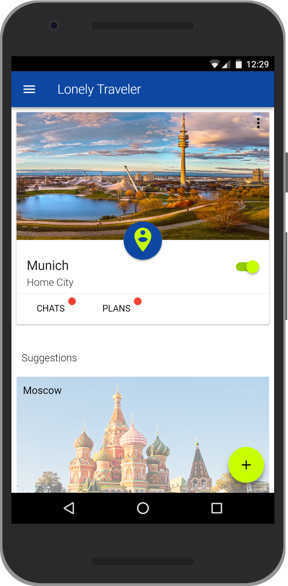
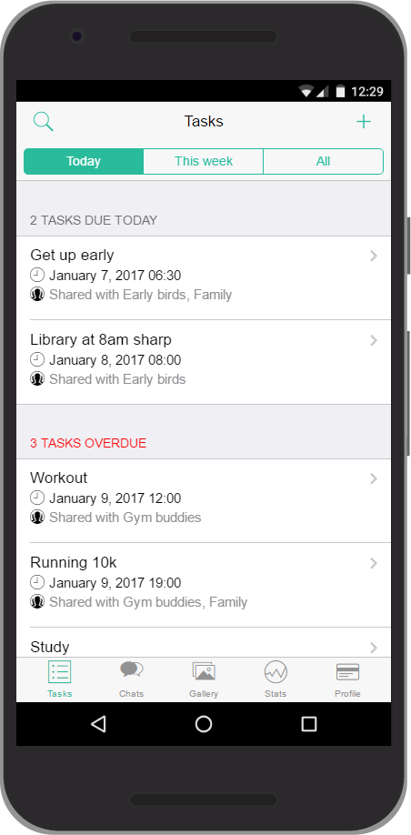
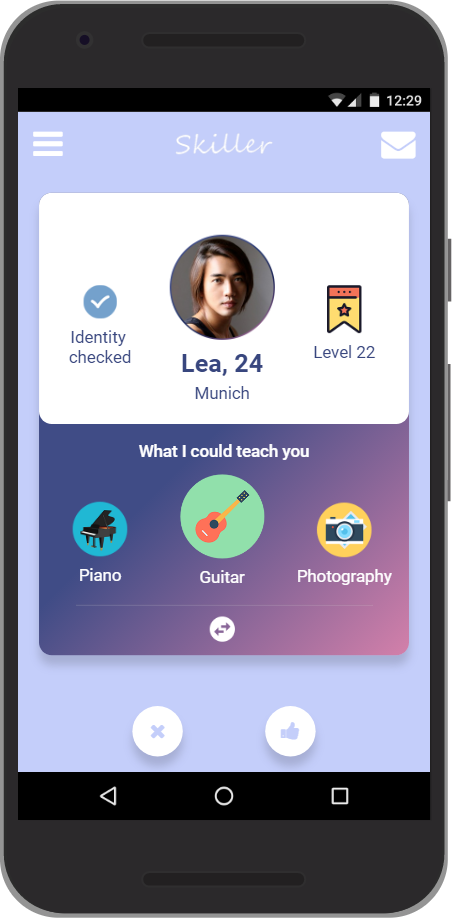

Frameworks
Guidelines
A guideline is a record of an insight that can be used to guide future design efforts (Schneiderman & Plaisant, 2010, p. 75). Guidelines in general tend to be more specific about the implementation of solutions than design patterns.
Some of the most widely known and used guidelines are the iOS and Android's Material Design guideline.
It may be tempting to base your choice of design guideline on assumptions about your users. Headlines like "What kind of user prefers an iPhone?" suggest there might be fundamental differences. However, academic research is inconclusive. There are some studies finding that users vary in personality traits (e.g. Shaw et al., 2016, Ubhi et al., 2017), whereas other studies with large sample sizes found no significant differences (e.g. Götz et al., 2017)
Tips:
- Be precise!
- Make sure to really follow your chosen framework
- Reasonably explain deviations from the framework
Chapter 7: From Requirements to Design: The Framework and Refinement by Cooper (2007), book chapter in About Face 3
Material Design by Google
Human Interface Guidelines by Apple
How To Create a Style Guide From Scratch. Tips and Tricks by Andrei Dorin, online article
Choosing a framework for your app
There are two ways for you to determine the design language/framework you can use in your app. You can use a predefined styleguide or you can define your own style. Where both approaches have advantages and disadvantages alike, it is your task to make an educated choice and document it properly. The choice of framework/design language strongly influences the interaction patterns your app is going to employ.
While we do not require you to use any framework at all, we strongly suggest you use one. Choice of framework is up to you, however a flexible candidate, that incorporates material design, iOS guidelines as well as customization options is Framework 7.
When choosing to follow a predefined design language, be precise and make sure to really follow it. Deviations from a chosen language have to be explained reasonably and the observance of your chosen style will be considered during grading.
(Some) Strengths and pitfalls
Material Design
© Lonely Traveler, IPP SS17
- subtle skeuomorphism
- simplified physics to support intuitive user understanding
- dark themes available
- strongly associated with Google and android devices
- animations may not work for every user
iOS
© HabbiApp, IPP WS16/17
- highly consistent and recognizable visual language
- iPhone users spend more money on apps and in-app purchases
- strongly associated with iPhone devices
- in Germany, iOS only holds 35% of the OS market share
Customized design language
© Skillers, IPP WS16/17
- visual language to perfectly suit your app
- not associated with any other platform or existing app
- additional work to design new design language
- not build on several years of user tests and rework
Style guide template for Adobe XD by Tyler Wain
Style guide template for Figma by SaaS Design
Discuss your considerations and decisions with your programming tutor. Document your decision process and why you chose which design language on not more than one page in iteration-3/analysis in the GitHub master branch.